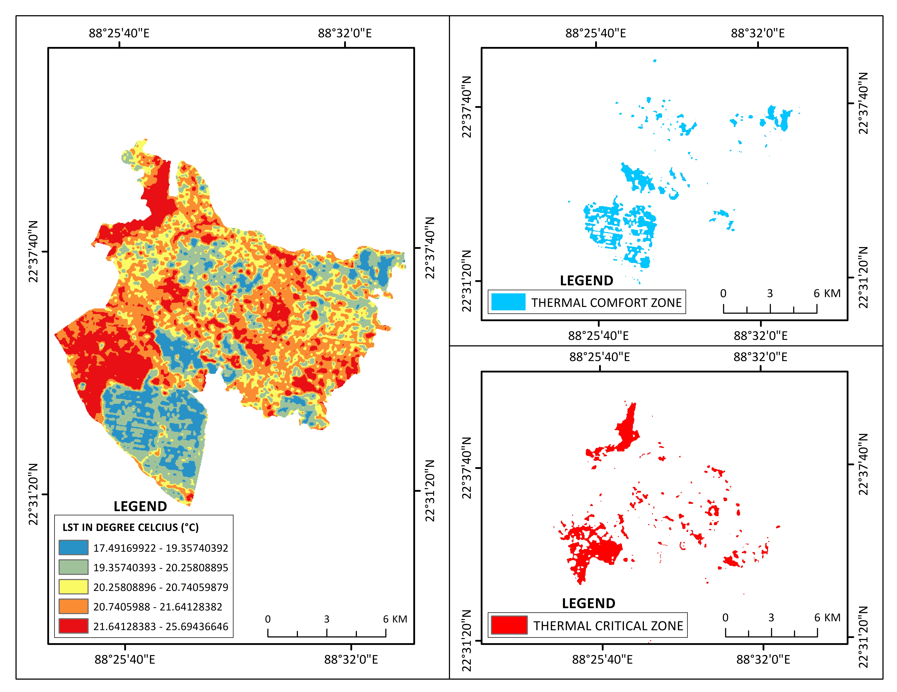
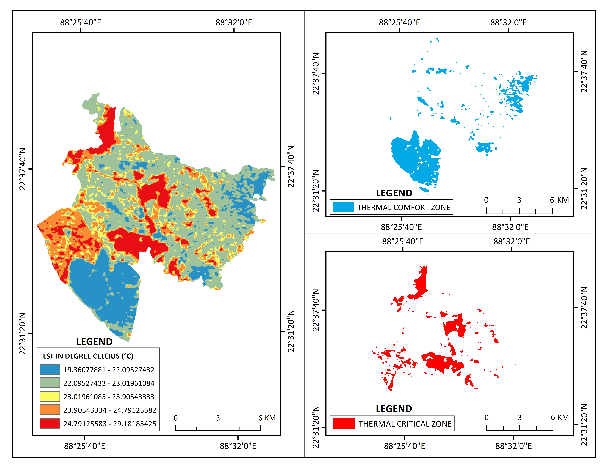
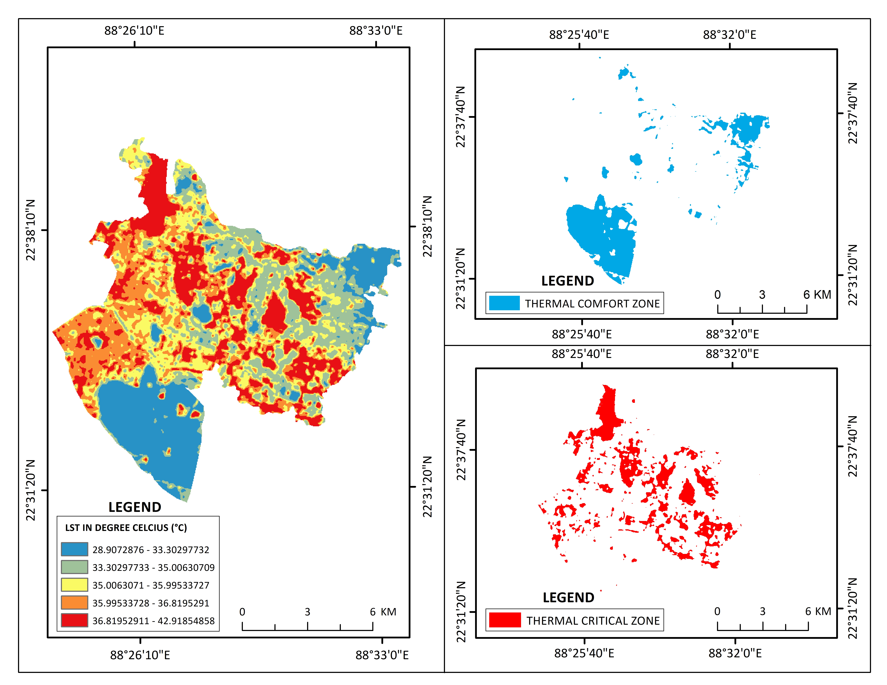

Table of Contents

Thermal Environment and LST Dynamics of Rajarhat Block (1995)
This baseline assessment evaluates the spatial distribution of Land Surface Temperature (LST) across Rajarhat Block in 1995, where temperatures ranged from 17.49°C to 25.69°C.
Key Insights:
Thermal Range & Ambient Baseline: Lower overall surface temperatures prevail across the block, with moderate temperature classes (20.26°C–21.64°C) dominating the agrarian landscape.
Thermal Comfort Zone: Prominent blue cooling zones are concentrated in the southwestern depression and scattered throughout northeastern wetland complexes and bheris, providing regional microclimatic buffering.
Thermal Critical Zone: High-temperature critical hotspots (red, 21.64°C–25.69°C) are minimal and fragmented, restricted to compact rural settlement clusters, dry fallow plots, and bare surfaces in the northwest.
The 1995 thermal regime represents an agrarian-dominated rural ecosystem with minimal anthropogenically induced heat anomalies.

Thermal Environment and LST Dynamics of Rajarhat Block (2005)
This analysis captures the early-stage shifts in surface thermal patterns in 2005, showing an elevated LST range between 19.36°C and 29.18°C.
Key Insights:
Emergence of Western Heat Clusters: Critical thermal zones (red, 24.79°C–29.18°C) begin coalescing along the western boundary and north-central corridors, aligning with initial land clearances, earthwork, and early construction of the New Town planned extension.
Thermal Comfort Stability: The large southwestern water body and northeastern aquaculture tracts remain resilient cooling buffers, keeping local temperatures below 22.10°C.
Transitional Matrix: The expansion of intermediate yellow and orange zones (23.02°C–24.79°C) marks the widespread conversion of active croplands into cleared and compacted construction plots.
The 2005 phase highlights the onset of urban surface warming, driven by the replacement of vegetative cover with exposed soil and early infrastructure.

Thermal Environment and LST Dynamics of Rajarhat Block (2015)
This evaluation details the consolidation of urban heat patterns in 2015, marked by a sharp jump in maximum surface temperatures reaching 25.97°C to 36.75°C.
Key Insights:
Consolidation of the Thermal Critical Core: The Thermal Critical Zone (red, 32.14°C–36.75°C) expands into a prominent, contiguous heat corridor across western and central Rajarhat, driven by dense built-up areas, asphalt roads, and commercial complexes.
Shrinkage of Thermal Comfort Zones: Blue comfort zones contract sharply, becoming confined primarily to major retained reservoirs in the southwest and isolated water bodies in the east.
Intensification of Microclimatic Gradients: A steep temperature gradient develops between the intensely built western core and the remaining peripheral agricultural tracts.
The 2015 thermal profile clearly demonstrates a well-established Surface Urban Heat Island (SUHI) generated by rapid, large-scale metropolitan expansion.

Thermal Environment and LST Dynamics of Rajarhat Block (2025)
This assessment tracks the peak thermal configuration in 2025, where surface temperatures reach extreme highs ranging from 28.91°C to 42.92°C.
Key Insights:
Aggressive Thermal Critical Expansion: The critical zone (red, 36.82°C–42.92°C) spans nearly the entire western half and penetrates deep into central and southeastern sectors, reflecting massive impervious surface coverage and dense urban fabric.
Isolation of Cooling Buffers: Thermal Comfort Zones (28.91°C–33.30°C) are strictly restricted to deep water reservoirs and preserved wetland nodes, while smaller water bodies have largely lost their local cooling effect.
Pervasive High-Temperature Matrix: Intermediate and elevated thermal classes (yellow and orange, >35.00°C) cover almost all remaining open lands, signaling severe landscape-level heat stress.
The 2025 mapping underscores an acute surface urban heat island effect, demonstrating an urgent need for urban green corridors, reflective cool roofs, and wetland conservation in Rajarhat Block.